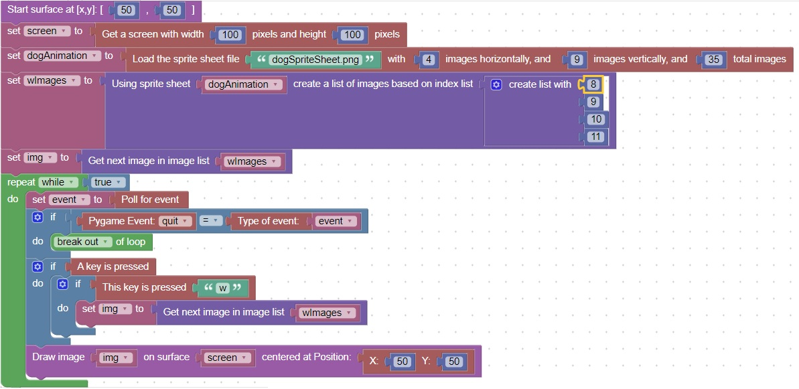

Animating character movement with a sprite sheet
Sprite sheets are a great way to show character movement
Usually they contain a variety of still pictures that you can rotate between when your player is moving
Also, the sheet usually has pictures organized to simulate left to right, right to left, up to down and down to up movement
These groups correspond to the wasd keys that people are familiar with
This code shows an example that handles the w key (down to up) movement.

You homework is to add the a,s and d keys movement